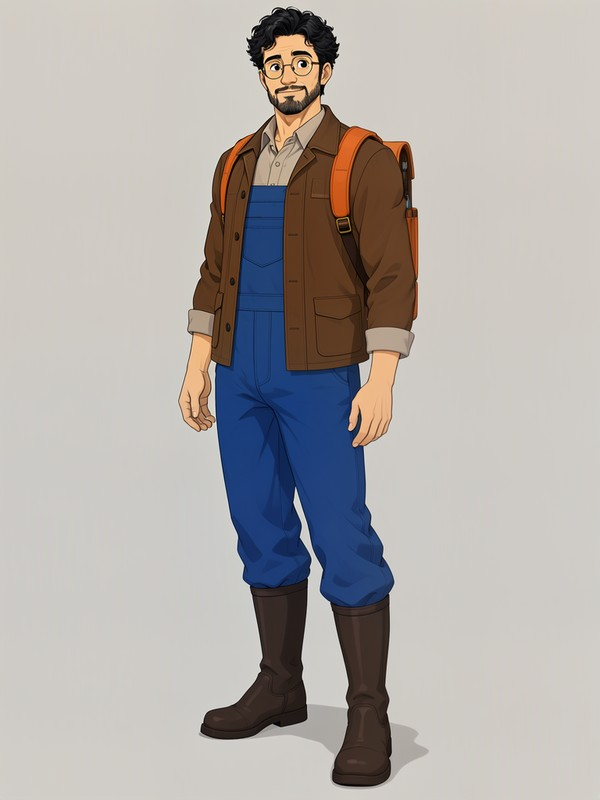
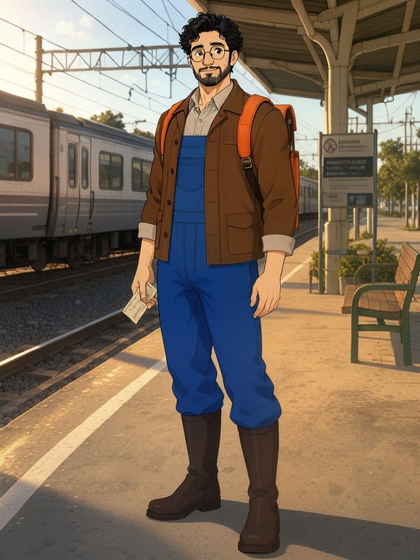
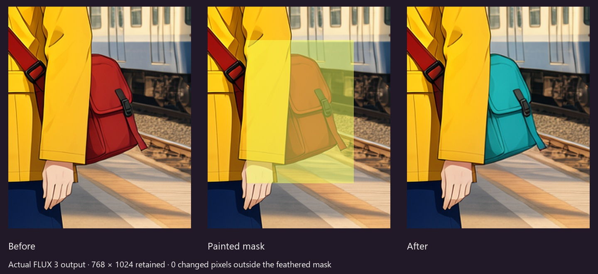

FLUX 3 Image Klein · Your GPU
One character. Many scenes.
Every detail under control.
Create original characters, maintain their visual identity across scenes, refine individual details, and export reproducible workflows. An open-weight studio powered by FLUX 3 and ComfyUI.


Actual local runs, one original reference. The original character was created with MOSS-Image SFT; all three new scenes use FLUX 3. See the full evaluation, including failures.
From an idea to a take you can keep.
FLUX 3 · 1:57 with English narration · Create, Reference, Refine and export in the actual application. This is the November 3 release; the October 30 FLUX.2 video remains with the previous release.
Real application captures, with synthetic Drama 3 narration and original Yue2 accompaniment. Audio sources and permissions. Run the generator locally with your own ComfyUI; this site hosts a recorded demonstration.
A small edit. The rest of your image stays.
Paint the detail. FLUX 3 sees the surrounding context; MOSS GO restores the crop and blends the result through your feathered mask.

Your work includes the workflow.
Keep the original and expanded description.
The official local upsampler uses your request and reference. Detailed captions can bypass it. Both texts stay with the take.
Return to a take, not an empty canvas.
Saved versions retain their source, mask, engine, seed and parameters. Scene packs run one job at a time.
Inspect the actual executed graph.
A portable ZIP contains inputs, masks, results, recipes and ComfyUI API graphs. Import prepares the workspace for review.
Run it locally.
Verified machine: RTX 4070 Ti SUPER 16 GB, 32 GB RAM, Windows. Use a compatible ComfyUI 0.41.2+ and the MOSS GO node pack. The default INT8 component download is 20.77 GB.
Install the studio in a separate Python environment, accept the model's Hugging Face terms, then download the pinned flux3-balanced pack. English opens by default; Russian and two themes are included.
Other GPU sizes and Linux GPU execution remain unverified. FLUX.2 Klein and MOSS stay available as explicit alternatives. Installation instructions →